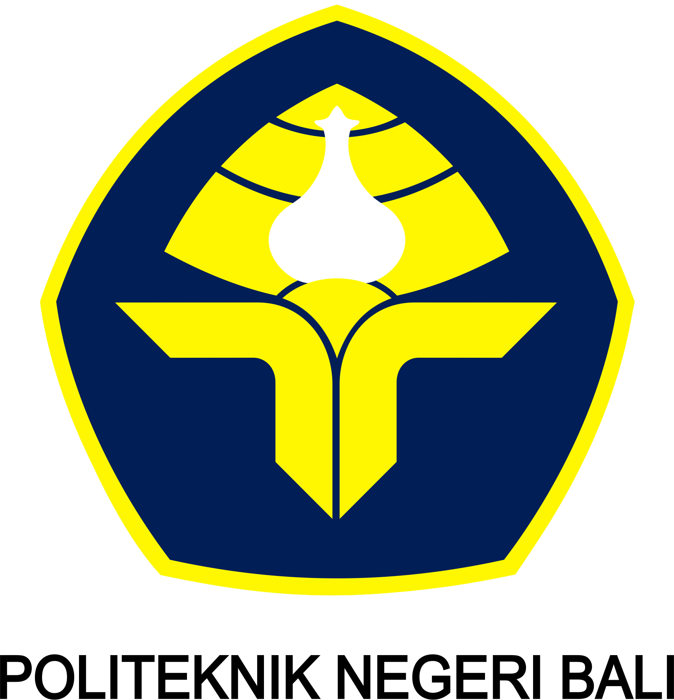
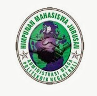

|  |
POLITEKNIK NEGERI BALITerdepan, Profesional, dan Berdaya Saing Internasional |
| Home | Tentang Kami | Jurusan | Kontak |
|
 Jurusan Administrasi Niaga VISI : Menjadi Jurusan Penghasil Tenaga Administrasi, Bisnis dan Manajemen Profesional yang Berwawasan Internasional. MISI :
Program Studi D3 Administrasi Bisnis : Menghasilkan lulusan dengan kompetensi; mampu merancang sistem kearsipan, mengelola sistem perkantoran, mengoordinasikan tugas-tugas perkantoran sesuai dengan kebutuhan kantor, serta menciptakan suatu usaha mandiri, mampu berkomunikasi bisnis baik verbal maupun nonverbal dalam bahasa inggris, mampu mengidentifikasi kebutuhan pelanggan, menguasai strategi penjualan, serta mampu menangani dan membina relasi dengan pihak eksternal dan internal perusahaan. Program Studi D4 (S1 Terapan) Manajemen Bisnis Internasional : Bertujuan untuk menyediakan SDM yang mempunyai kompetensi di bidang bisnis dan manajerial antara lain; mampu menerapkan prinsip dan teori manajemen didukung kemampuan mengoperasikan aplikasi komputer dan menggunakan teknologi informasi, merancang sistem informasi manajemen, melakukan manajemen mutu dan resiko, serta mampu berkomunikasi dalam bahasa inggris secara aktif, sehingga mampu mengambil keputusan strategis bagi dunia industri atau perusahaan seperti; perbankan, rumah sakit, travel, BUMN, hotel/penginapan, telekomunikasi, asuransi, dan properti. |
|
| Copyright IanRizky | 2015 |